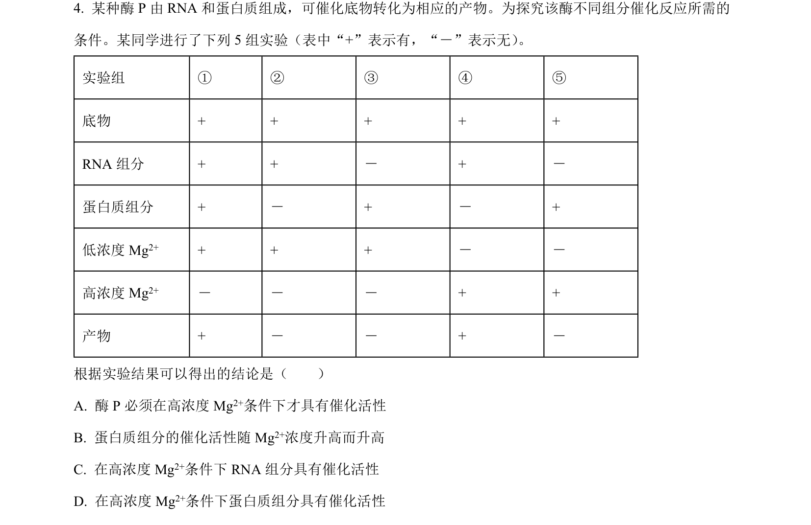
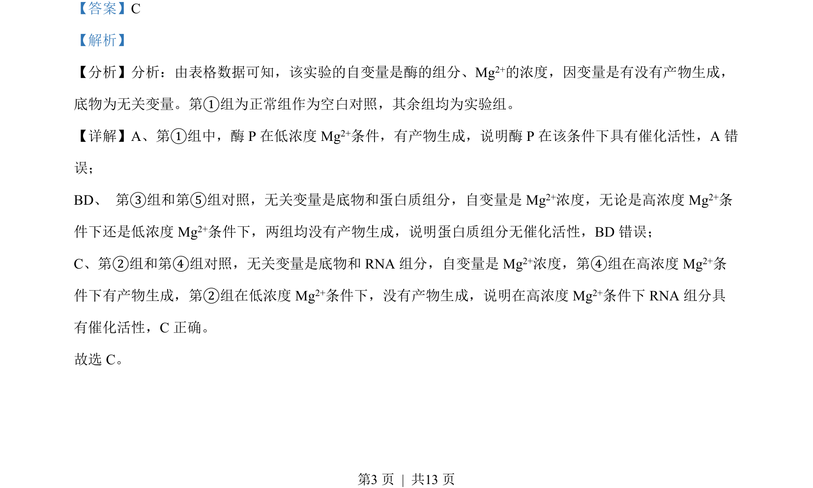

2022-全国乙-04
考点：酶的催化活性 实验变量 RNA 的催化功能
题面

摘要
题目通过对照实验分析酶 P 及其 RNA/蛋白质组分在不同 Mg²⁺浓度下的催化活性。
关联考点
答案与解析


📄 原 PDF 第 3 页：
素材/真题/吉林/2008-2024·（吉林）生物高考真题/2022年高考生物试卷（全国乙卷）（解析卷）.pdf
题干文本
- 某种酶 P 由 RNA 和蛋白质组成，可催化底物转化为相应的产物。为探究该酶不同组分催化反应所需的 条件。某同学进行了下列 5 组实验（表中“+”表示有，“－”表示无） 。 实验组 ① ② ③ ④ ⑤ 底物 + + + + + RNA 组分 + + － + － 蛋白质组分 + － + － + 低浓度 Mg2+ + + + － － 高浓度 Mg2+ － － － + + 产物 + － － + － 根据实验结果可以得出的结论是（ ） A. 酶 P 必须在高浓度 Mg2+条件下才具有催化活性 B. 蛋白质组分的催化活性随 Mg2+浓度升高而升高 C. 在高浓度 Mg2+条件下 RNA 组分具有催化活性 D. 在高浓度 Mg2+条件下蛋白质组分具有催化活性
解析文本
【答案】C 【解析】 【分析】分析：由表格数据可知，该实验的自变量是酶的组分、Mg2+的浓度，因变量是有没有产物生成， 底物为无关变量。第①组为正常组作为空白对照，其余组均为实验组。 【详解】A、第①组中，酶 P 在低浓度 Mg2+条件，有产物生成，说明酶 P 在该条件下具有催化活性，A 错 误； BD、 第③组和第⑤组对照，无关变量是底物和蛋白质组分，自变量是 Mg2+浓度，无论是高浓度 Mg2+条 件下还是低浓度 Mg2+条件下，两组均没有产物生成，说明蛋白质组分无催化活性，BD 错误； C、第②组和第④组对照，无关变量是底物和 RNA 组分，自变量是 Mg2+浓度，第④组在高浓度 Mg2+条 件下有产物生成，第②组在低浓度 Mg2+条件下，没有产物生成，说明在高浓度 Mg2+条件下 RNA 组分具 有催化活性，C正确。 故选 C。